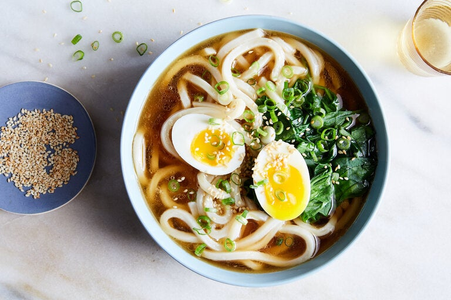

Udon

Description:
Udon is a thick noodle made from wheat flour, used in Japanese cuisine.
There is a variety of ways it is prepared and served.
Its simplest form is in a soup as kake udon with a mild broth called kakejiru made from dashi,
soy sauce, and mirin. It is usually topped with thinly chopped scallions.
Ingredients
- Udon Noodles
- Dashi Broth
- Toppings of choice, like green onion, shischimi Togarashi, fish cake, raw egg, etc.
- Additional prep required: Beef and scallion, Tempura or kakiage, egg
Steps
- Cook Udon Noodles. To cook it, prepare a large pot of water. They contain quite a bit of salt already so we do not need to salt the water (same for soba noodles!). Cook the noodles according to the package instructions.
When the udon noodles are cooked and drained, always rinse the starch under cold running water. This gives the noodles a firm, but chewy texture.
For hot udon noodle soup, the noodles are quickly dunked in warm water (in a second pot) before being served in a bowl. I don’t always prepare the second pot of warm water (sorry I am lazy), so I quickly run the noodles in hot water in the sink (switch from cold to hot on the faucet). Not the proper way, but it does the job.
- Prepare the soup broth. To prepare it, Make dashi (Japanese soup stock) – You can make it from scratch with kombu and katsuobushi. For vegetarians/vegans, make Vegan Dashi. It takes only 30 minutes or less, but if you need to speed things up, use a dashi packet or dashi powder.
Season the dashi – Add soy sauce, mirin, sugar, and salt. Ready to pour over the noodles!
- Put the soup broth into the noodle in a bowl
- Add the toppings of your choice.